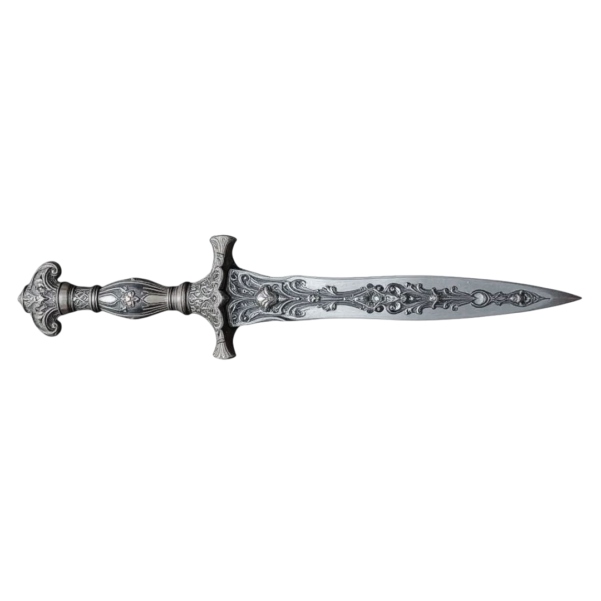

- This account contains explicit, dark, and mature content not suitable for all ages. Minors and age-unlocked accounts do not interact.
- This account is exclusively for roleplaying purposes. The admin is not affiliated with Lee Jooheon, his agency, or any associated companies. Théoden is an entirely original character; his actions, personality, and lore do not reflect Lee Jooheon in real life.
- Admin is over the age of 20 and prefers to interact with writers who are 20+. Théoden is kept in character at all times, so please keep all timeline interactions in-character. Any out-of-character comments from the admin will be denoted using slashes (e.g., / hello!).
- AU in collaboration with @asphyxielle
